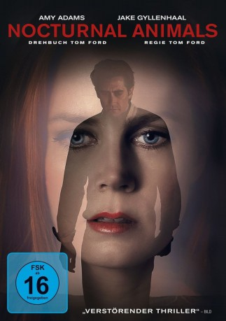

#5753 Nocturnal Animals
Auszeichnungen: für 1 Oscars nominiert 1 GoldenGlobes gewonnen
 gesehen am 14.04.2017
gesehen am 14.04.2017
 
 IMDB-Wertung: 7.6 / 10
IMDB-Wertung: 7.6 / 10  Tomatometer: 73
Tomatometer: 73  Metascore: 0
Metascore: 0 
Die Kunsthändlerin Susan Morrow führt in Los Angeles ein privilegiertes, aber unerfülltes Leben mit ihrem neuen Ehemann. Als dieser erneut zu einer seiner zahlreichen Geschäftsreisen aufbricht, erhält sie ein Manuskript mit dem Titel Nocturnal Animals, geschrieben von ihrem Ex-Ehemann Edward Sheffield, mit dem sie seit Jahren keinen Kontakt mehr hat. Der Roman ist Susan gewidmet, doch sein Inhalt ist brutal und niederschmetternd. Edward erzählt darin die Geschichte von Tony Hastings, der mit seiner Familie durch Texas fährt und dort eines Nachts von der Straße abgedrängt wird. Machtlos muss Tony dabei zusehen, wie seine Familie entführt wird und seine größten Ängste Wirklichkeit werden.\r Tief bewegt von Edwards Worten erinnert sich Susan an die intimsten Momente ihrer eigenen Liebesbeziehung zu ihm. Je weiter die Erzählung in Nocturnal Animals auf eine Abrechnung zuläuft, desto dramatischere Auswirkungen hat sie nicht nur auf ihren Helden, sondern auch auf Susan.
Jahr: 2016
Dauer: 116 Minuten
FSK: 16
Land: USA Studio: Focus FeaturesTonspuren: DTS - ,
Untertitel: Deutsch,
Auflösung: 1080p (1920x792) Größe: 10055 MB
Genre: Thriller, Drama
Regisseur: Tom Ford
Drehbuch: Julia Donaldson
Soundtrack:
Darsteller:
 Amy Adams als Susan Morrow
Amy Adams als Susan Morrow Jake Gyllenhaal als Tony Hastings / Edward Sheffield
Jake Gyllenhaal als Tony Hastings / Edward Sheffield Michael Shannon als Bobby Andes
Michael Shannon als Bobby Andes Aaron Taylor-Johnson als Ray Marcus
Aaron Taylor-Johnson als Ray Marcus Isla Fisher als Laura Hastings
Isla Fisher als Laura Hastings- Ellie Bamber als India Hastings
 Armie Hammer als Hutton Morrow
Armie Hammer als Hutton Morrow- Karl Glusman als Lou
- Robert Aramayo als Turk
 Laura Linney als Anne Sutton
Laura Linney als Anne Sutton Andrea Riseborough als Alessia
Andrea Riseborough als Alessia Michael Sheen als Carlos
Michael Sheen als Carlos- India Menuez als Samantha Morrow
- Imogen Waterhouse als Chloe
- Franco Vega als Driver
- Zawe Ashton als Alex
- Beth Ditto als TV Woman Voice #2
 Graham Beckel als Lieutenant Graves
Graham Beckel als Lieutenant Graves Neil Jackson als Christopher
Neil Jackson als Christopher Jena Malone als Sage Ross
Jena Malone als Sage Ross- Lee Benton als Office Executive
- Kristin Bauer van Straten als Samantha Van Helsing
- Sydney Schafer als Hostess
- Evan Bittencourt als Elevator Operator
 Janet Song als Nurse
Janet Song als Nurse- Lori Jean Wilson als Video Woman #2
- Peggy Fields Richardson als Video Woman #3
- Piper Major als Video Woman #4
- Moose Ali Khan als Oscar - Diner Guest , uncredited
- Brianna Barnes als Restaurant Patron , uncredited
- Evan Charles als Alex - Diner Guest , uncredited
- Bryan Cruz als Art Gallery Guest , uncredited
- Jack Dilday als Waiter , uncredited
- Lena Evans als Gallery Patron , uncredited
- Amanda Fields als Art Gallery Guest , uncredited
- Josh Ford als Businessman , uncredited
- Jonathan Fredrick als UPS Man , uncredited
- Alizee Gaillard als Guest Restaurant , uncredited
- Nick Hounslow als Party Attendee , uncredited
- Victor Ross II als Party Attendee , uncredited
- Holly Kagis als Beautiful Woman , uncredited
- Karli Karissa als UT student , uncredited
- Jason J Lai als Austin - Diner Guest , uncredited
- Kerstin Lechner als Kerstin - Restaurant Guest , uncredited
- Carson Nicely als Dinner Party Valet , uncredited
- Kendall O'Rorke als Dinner Guest / NYC Woman , uncredited
- Chris Pinkalla als Art Gallery Waiter , uncredited
- Tonia Marie Rosée als Art Gallery Guest , uncredited
- Errol Sack als Trucker , uncredited
- Brian Stivale als Gallery Guest , uncredited
Datei: X:\2016(N-Z)\Nocturnal Animals (2016, FSK16, 1920x792).mkv seit 17.03.2017
Festplatte: HD 2016(A-Z)
 Es gibt insgesamt 182 Filme in der Gruppe '2016(N-Z)'
Es gibt insgesamt 182 Filme in der Gruppe '2016(N-Z)'